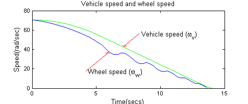
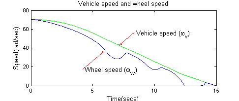
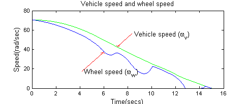

Anti-Lock Braking System (ABS) Overview
The following related models build on each other to illustrate the early, middle and late phases in the design of a component in a distributed system. The system being modeled is that of an anti-lock braking system (ABS) in a vehicle.
Increasing the complexity of your model incrementally lets you evaluate and refine your design efficiently. By including real-world timing effects in the model, you gain confidence about the behavior and robustness of your design before you test it in hardware.
Contents
ABS Model Without Delays
The Anti-Lock Braking System (ABS) demo lets you prototype a design and explore its performance without accounting for latency between components in a distributed system. The following figure shows the simulation result of an ABS system model. The simulation result below shows the vehicle speed and the wheel speed for a braking vehicle with an ABS system the prevents wheel lock-up.
modelname = 'sedemo_absbrake_nodelay'; open_system( [modelname, '.mdl'] ); sim(modelname); close(findobj('Name', 'ABS Slip')); sedemo_helper(gcs, 'CloseFig'); f = findobj('Name', 'ABS Speeds'); set(f, 'Tag', ''); close_system(modelname, 0);
ABS Model with Queuing Delay
The Anti-Lock Braking System (ABS) Model with Queuing Delay demo uses a simple queuing model to introduce timing uncertainty in the ABS system. This uncertainty models latency between components in the distributed system. The following figure shows the simulation result of such a system.
bdclose all; close(findobj('Name', 'ABS Speeds')); modelname = 'sedemo_absbrake_delay'; open_system( modelname ); sim(modelname); close(findobj('Name', 'ABS Slip')); sedemo_helper(gcs, 'CloseFig'); f = findobj('Name', 'ABS Speeds'); set(f, 'Tag', ''); close_system(modelname, 0);
ABS Model Using CAN Communications
The Anti-Lock Braking System (ABS) Model Using CAN Communications demo models the Control Area Network (CAN) and shows how stochastic network traffic causes timing latency and uncertainty that is representative of a real-world heavily-loaded network. The following figure shows the simulation result of such a system.
bdclose all; close(findobj('Name', 'ABS Speeds')); modelname = 'sedemo_absbrake_can'; open_system(modelname); sim(modelname); sedemo_helper(gcs, 'CloseFig'); f = findobj('Name', 'ABS Speeds'); set(f, 'Tag', ''); close_system(modelname, 0);
close(f); bdclose all; clear modelname f